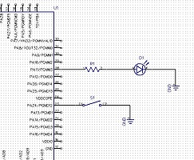

When an interrupt is triggered, the program stops where it's at and runs a block of code depending on the interrupt that was triggered. After the block of code finishes the program will continue where it left off before the interrupt was generated. This is handy for waiting for things to happen. Polling for UART characters to be received or testing a GPIO to see if a button was pressed is very inefficient. Instead, we can set an interrupt to wait for these events to happen and run our code.
You can find information on interrupts in the following sections of the datasheet: 12.8 Nested Vectored Interrupt Controller, 11.1 Peripheral identifiers, all peripheral chapters that use interrupts.
Let's setup an example of creating an interrupt when a button is pressed or released
*Note* The pin, PA24, has a weak internal pull up enabled (100k). If the pull up doesn't bring the voltage high fast enough, you can put a stronger pull up (1k) between the pin and the button.
Connect an led with current limiting resistor to PA11. We will set this as an output and toggle between high and low to turn it on and off.
Connect a button (SPST) to PA24 and set it as input. Since the button will connect the pin to ground, we will need to enable a weak pull up resistor so that when the button isn't pressed it will rise back up to high.
#include "sam.h" void clock_init(){ //enable external crystal REG_CKGR_MOR |= CKGR_MOR_KEY_PASSWD | CKGR_MOR_MOSCXTEN; //wait for crystal to become ready while (!(REG_PMC_SR & PMC_SR_MOSCXTS)); //select crystal REG_CKGR_MOR |= CKGR_MOR_KEY_PASSWD | CKGR_MOR_MOSCSEL; //master clock source selection - choose main clock REG_PMC_MCKR |= PMC_MCKR_CSS_MAIN_CLK; //wait until main clock ready while (!(REG_PMC_SR & PMC_SR_MCKRDY)); //select processer prescaler (0 - no divisor) REG_PMC_MCKR |= PMC_MCKR_PRES_CLK_1; //wait until main clock ready while (!(REG_PMC_SR & PMC_SR_MCKRDY)); } int main(void) { SystemInit(); clock_init(); //enable clock for PIOA REG_PMC_PCER0 |= PMC_PCER0_PID11; //Setup Input and Output pins and an interrupt //set PA30 as controllable by the PIO controller (disable peripheral) REG_PIOA_PER |= PIO_PER_P11; //set PA30 as output for LED REG_PIOA_OER |= PIO_OER_P11; //set PA30 high REG_PIOA_SODR |= PIO_SODR_P11; //set PA24 as controllable by the PIO controller (disable peripheral) REG_PIOA_PER |= PIO_PER_P24; //output disable register (set as input for button) REG_PIOA_ODR |= PIO_ODR_P24; //disable pull down REG_PIOA_PPDDR |= PIO_PPDDR_P24; //enable internal pull up resistor on PA24 REG_PIOA_PUER |= PIO_PUER_P24; //enable glitch filter on PA24 (button debounce) REG_PIOA_IFER |= PIO_IFER_P24; //Read ISR so that it clears any interrupt flags that might be there uint32_t temp = REG_PIOA_ISR; //enable input change interrupt on PA24 REG_PIOA_IER |= PIO_IER_P24; //enable PIOA interrupts NVIC_EnableIRQ(PIOA_IRQn); while (1) { //the program will loop here until an interrupt is triggered } } //when PIOA interrupt is triggered this block of code will run void PIOA_Handler(void) { // reading PIOA_ISR will clear interrupt flags uint32_t status = REG_PIOA_ISR; if ((status & PIO_ISR_P24) >= 1){ //pin change interrupt on P24 //if PA11 high then set low, if PA11 low then set high if ((REG_PIOA_PDSR & PIO_ODSR_P11)>=1){ //set PA11 low REG_PIOA_CODR |= PIO_CODR_P11; } else{ //set PA11 high REG_PIOA_SODR |= PIO_SODR_P11; } } }
{kind=link}